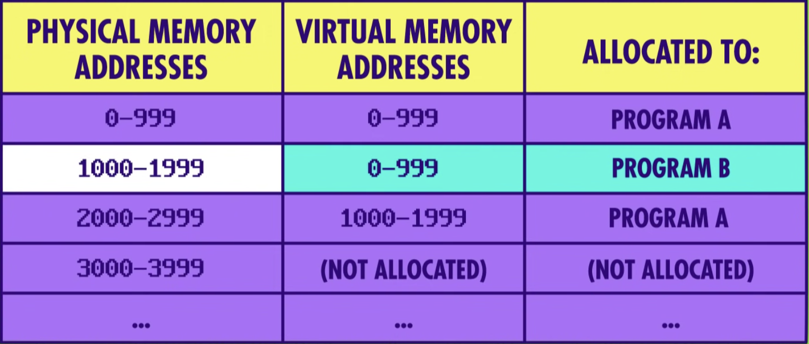

前言
這篇文章是新的系列，主要來探討Backend Roadmap 的每一條支線。
最近在網路上看到了有人整理了各種工程師的 Roadmap，裡面不外乎包含了 前端工程師、後端工程師，這兩個職位在台灣也是很常見的職位，對於想要半路出家轉職為工程師的人來說是非常好的讀物!! 此外，也建議身為工程師的各位可以去看看自己還缺少了哪些知識。
正文
什麼是作業系統?
- 讓使用者與電腦硬體互相溝通的一個介面。
- 用來管理電腦硬體及軟體的一套系統，透過分配資源(CPU、Memory、Disk) 來管理程式的運行。
其實作業系統本身也是一個程式，但因為其擁有的特殊權限，讓他可以管理其他程序的運行。
作業系統的特色
- multitasking
- virtual memory
- memory protection
multitasking
可以讓多個程式同時運行的能力，但同時會衍生另一個問題 - 每個程式都需要用到記憶體，但當切換到運行另一個程式時，我們不能因此就丟掉這個數據。因此，這個問題的解決方法是 為每個程式分配專屬的內存空間，但一個程式會使用到的記憶體可能會分成好幾塊，並分配在不同的地方上(導致不是連續的)，這在處理上會相當麻煩，因此，需要使用到虛擬記憶體(virtual memory)的技術
Virtual Memory
對於每一個程式的記憶體而言，都是從 0 開始計算，而實際上對應到的位址是由作業系統來控制。給予每個程式單獨的記憶體位址的另一個好處是，可以讓程式之間互相隔離，避免其中一個壞掉時進而影響到其他的程式，這種行為稱作內存保護(Memory Protection)，這也能用來防止惡意軟體攻擊，避免他們能夠進一步竊取其他記憶體的資料 E.g. 閱讀、修改電子郵件。
這種行為也稱作動態記憶體分配。
